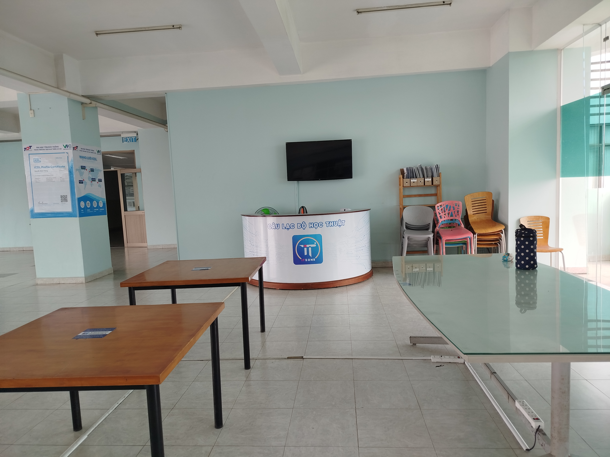

4 năm đại học trôi qua như một giấc ngủ trưa nhỉ.
Bốn năm đại học một quãng thời gian tưởng dài nhưng khi ngoảnh lại mới thấy trôi qua thật nhanh, như một giấc mơ đẹp vừa khép lại. Ngày đầu bước chân vào giảng đường, trong tim ai cũng đầy ắp sự háo hức xen lẫn lo âu. Từ những ánh mắt bỡ ngỡ, những buổi học đầu tiên đầy xa lạ, đến hôm nay, tất cả đã trở thành ký ức thân thương mà mỗi khi nhớ lại đều không khỏi bồi hồi.
Đại học không chỉ là nơi mình đã tích lũy kiến thức, mà còn là hành trình trưởng thành. Ở đó, mình học cách tự lập, biết đứng dậy sau những vấp ngã, biết trân trọng những cơ hội và cả những khó khăn. Có những đêm thức trắng cùng deadline, những buổi thuyết trình run rẩy trước lớp, những kỳ thi căng thẳng đến nghẹt thở… Nhưng chính những trải nghiệm ấy đã rèn cho mình sự kiên nhẫn và bản lĩnh để bước vào đời.
Bốn năm qua còn là quãng thời gian vun đắp tình bạn. Những người bạn cùng lớp, cùng câu lạc bộ, cùng công ty, cùng chí hướng,... chúng ta đã cùng trải qua từng khoảnh khắc vui buồn và đã trở thành một phần kỷ niệm không thể thiếu. Có những lần cười vang vì một trò đùa ngây ngô, có lúc lặng im chia sẻ nỗi buồn, có khi chỉ cần một cái vỗ vai cũng đủ động viên nhau tiếp tục.
Ngày ra trường, mỗi người sẽ bước đi trên một con đường riêng, mang theo ước mơ và hoài bão của mình. Nhưng dù ở đâu, làm gì, ký ức về bốn năm đại học sẽ luôn là hành trang quý giá, là điểm tựa để ta nhớ về những tháng ngày tuổi trẻ đẹp nhất.
Bốn năm đã đi qua, nhưng dư âm sẽ còn mãi – như một chương sách khép lại để mở ra hành trình mới, nơi chúng ta mạnh mẽ và trưởng thành hơn, mang theo niềm tin để chinh phục tương lai.
Hãy cùng lưu giữ và ôn lại những kỷ niệm đó vào buổi lễ tốt nghiệp của mình nhé !!!
Địa điểm: Sảnh 5AB Trường Đại Học Tôn Đức Thắng - 19 Nguyễn Hữu Thọ, Quận 7, TP. Hồ Chí Minh
Thời gian: ...
